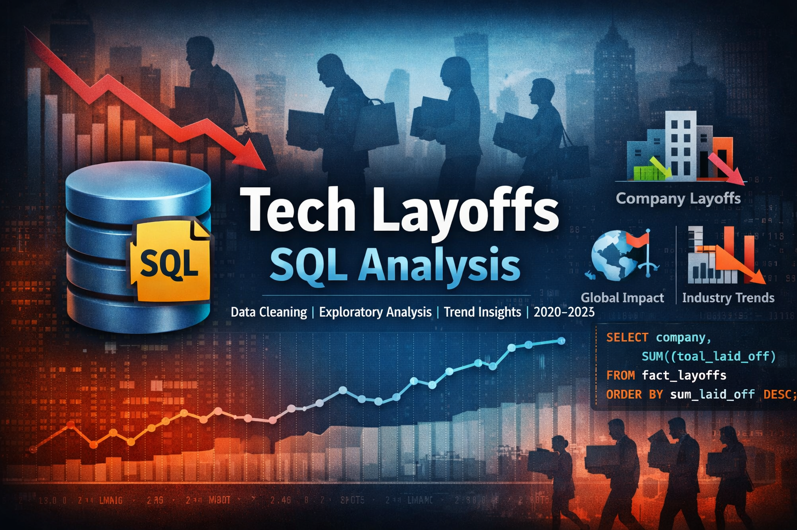

This project explores the data analyst job market using SQL to uncover valuable insights like skill demand, salaries, and role availability.

An interactive dashboard analyzing the global data jobs market to identify top salaries, hiring trends, and skill insights.

Enhanced version of the previous dashboard with better visuals, DAX insights, and a cleaner layout to support career decisions.

This project analyzes bike sales data to identify factors influencing customer purchases. Using Excel, I built an interactive dashboard to uncover actionable business insights from demographic and income trends.

Performed end-to-end SQL analysis on a tech layoffs dataset, including data cleaning, transformation, and exploratory analysis. Investigated major layoff trends by company, industry, country, and time to uncover patterns during the 2020–2023 tech downturn.